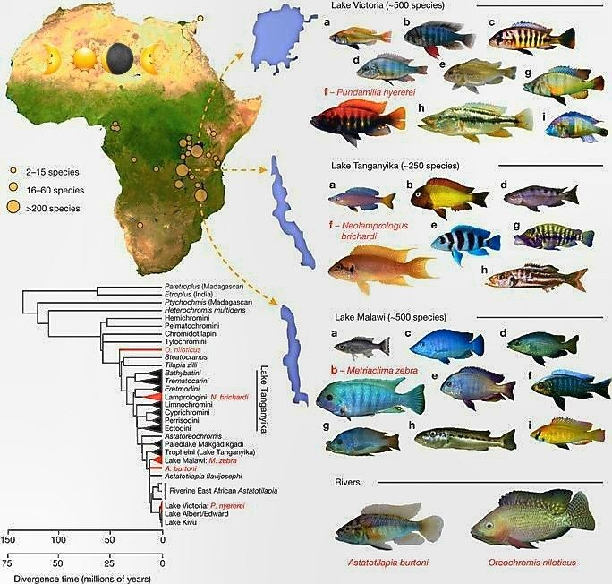
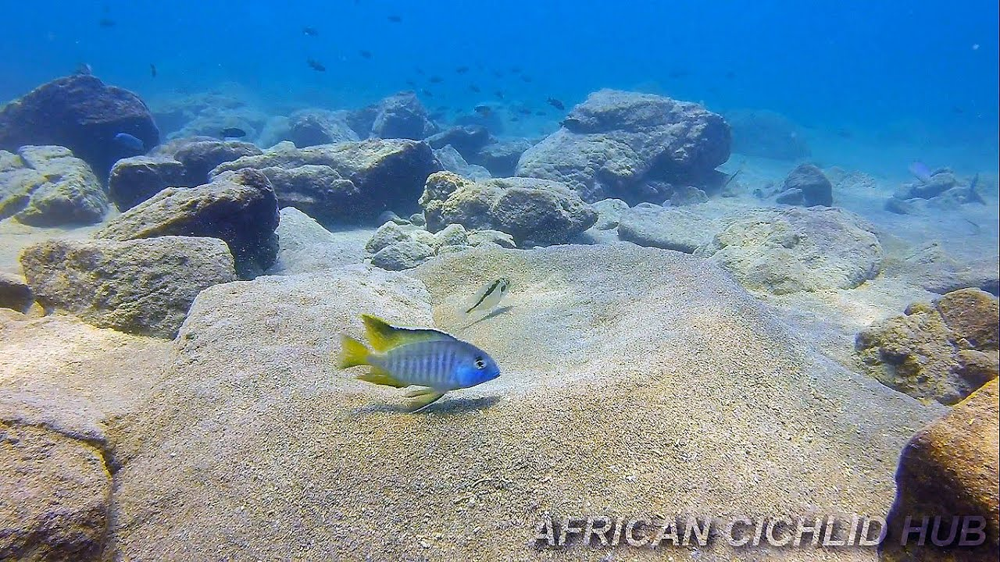
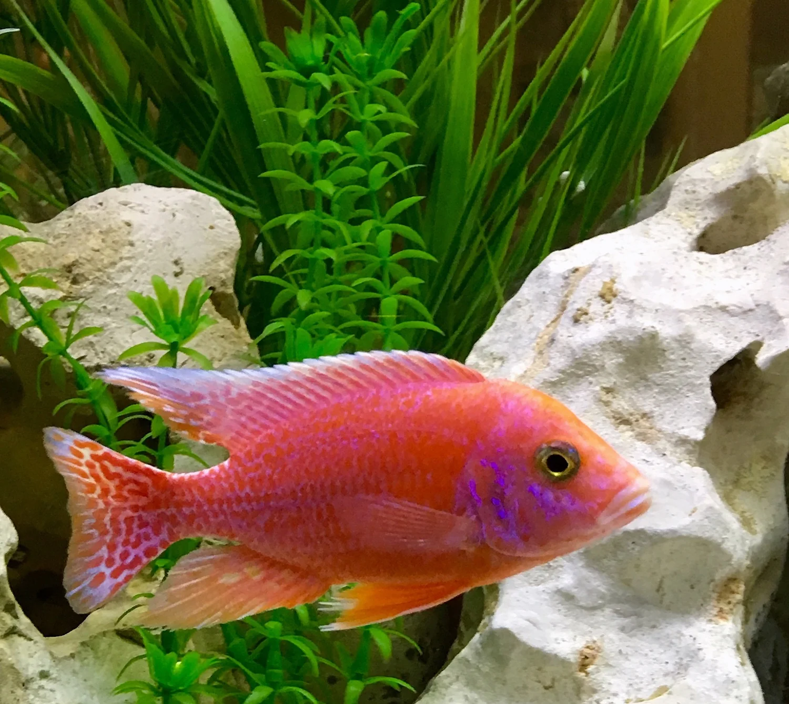

-
Physical Profile
-
Size Ranges
- Highly variable based on the tribe
- Dwarf species or shell-dwellers max out around 1 – 2.5 inches, while standard rock-dwelling species reach 4 – 6 inches Standard rock-dwelling species 4 – 6 inches
- Large predatory cichlids can exceed 11.8 inches - 39.4 inches in length
-
Identification Markings
Famous for incredible sexual dichromatism, where dominant males display brilliant, neon-electric color variations including intense blues, yellows, oranges, and iridescent greens. Females and subdominant males are typically duller gray, brown, or silver. Body shapes are typically laterally compressed with a single nostril on each side of the head. [2], [3], [5], [6], [7]
-
Habitat & Geography
-
Habitat
Highly specialized freshwater lake biomes. They are adapted to hard, alkaline, mineral-rich environments. Rock-dwellers (Mbuna) cling tightly to coastal boulder piles, while other groups thrive over open sandy bottoms.
-
Distribution
Native across the African continent, but globally famous for extreme concentration within the East African Rift Valley Lakes: Lake Malawi, Lake Tanganyika, and Lake Victoria. [4], [5], [8], [9]
-

Source: Dan Guiett 
Source: Fity
-
Ecology & Behavior
-
Diet
Varies intensely by species due to evolutionary adaptation. Many (Mbuna) are specialized herbivores that scrape algae off rocks (aufwuchs). Others are insectivores, omnivores, or specialized carnivores/piscivores that hunt small er fish. -
Behavior
Famous case study for adaptive radiation, where a single ancestral species quickly evolved into hundreds of distinct species to fill every localized ecological niche. They exhibit high intelligence, spatial memory, and intense territorial aggression. Dominant males fiercely guard specific rock caves or sand pits from competing males.
-
Communication
They utilize visual color flashes (darkening or brightening bars to indicate aggression or submission), physical shimmying/vibrating dances during courtship, and can release chemical pheromones into the water to communicate dominance.
-
Life History Cycle & Breeding Behaviors
Outstanding parental care compared to most fish. The vast majority are mouthbrooders. After spawning, the female scoops the fertilized eggs into her throat pouch/mouth. She incubates them safely inside her mouth for 21 to 28 days, refusing to eat during this time. Even after they hatch, the tiny fry will quickly swim back into the mother’s mouth if threat warnings arise. Average lifespan is 6 to 10 years.
-
Predators

| Common Name | African Cichlid |
|---|---|
| Conservation Status | Varies drastically by individual species; hundreds of endemic species are Threatened or Critically Endangered due to overfishing and invasive species |
| Kingdom | Animalia |
| Phylum | Chordata |
| Subphylum | Vertebrata |
| Class | Actinopterygii |
| Subclass | Neopterygii |
| Order | Cichliformes |
| Suborder | N/A |
| Family | Cichlidae |
| Genus | Varies (Common zoo genera include Aulonocara, Pseudotropheus, Maylandia) |
| Species | Enormous species group representing over 1,500 African varieties |